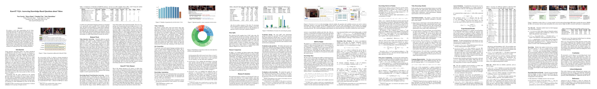
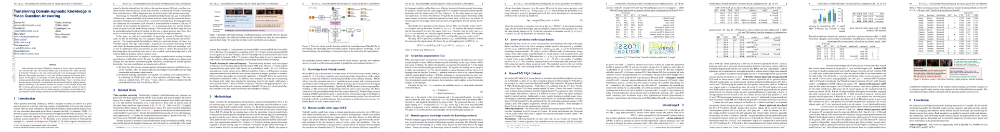
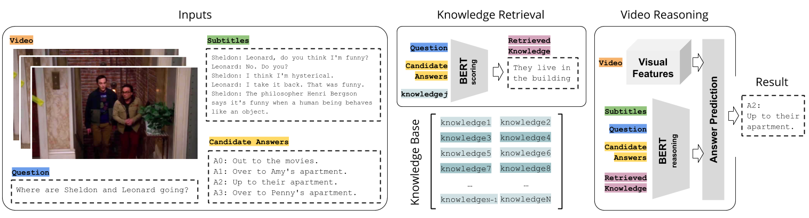
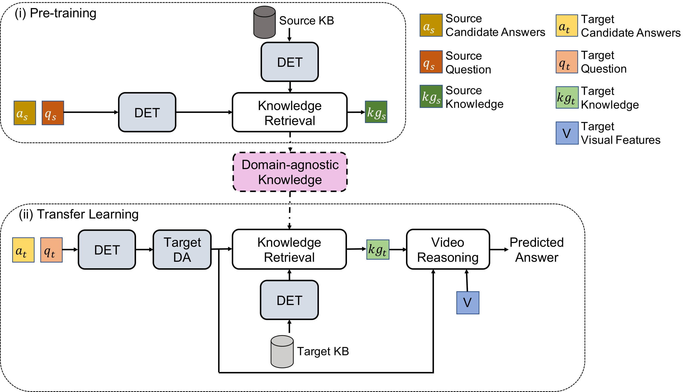

KnowIT VQA Paper
KnowIT VQA is a video dataset with 24,282 human-generated question-answer pairs about The Big Bang Theory.
The dataset combines visual, textual and temporal coherence reasoning together with knowledge-based
questions, which need of the experience obtained from the viewing of the series to be answered.
Our AAAI 2020 paper:

KnowIT-X VQA Paper
KnowIT-X VQA follows the same structure as KnowIT VQA and is used as the target dataset for VideoQA transfer learning.
This dataset contains 21,412 human-generated question-answer pairs about Friends.
Our BMVC 2021 paper:

If you find our paper useful, please cite us:
@InProceedings{garcia2020knowit,
author = {Noa Garcia and Mayu Otani and Chenhui Chu and Yuta Nakashima},
title = {KnowIT VQA: Answering Knowledge-Based Questions about Videos},
booktitle = {Proceedings of the Thirty-Fourth AAAI Conference on Artificial Intelligence},
year = {2020},
}
@InProceedings{wu2021transferring},
author = {Tianran Wu and Noa Garcia and Mayu Otani and Chenhui Chu and Yuta Nakashima and Haruo Takemura},
title = {Transferring Domain-Agnostic Knowledge in Video Question Answering},
booktitle = {Proceedings of the British Machine Vision Conference (BMVC)},
year = {2021},
}
Dataset Download
▪ KnowIT VQA Annotations: [Download]
It contains 3 csv files (tab separated): knowit_data_train.csv, knowit_data_val.csv, and knowit_data_test.csv.
▪ KnowIT-X VQA Annotations: [Download]
It contains 3 csv files (tab separated): knowit_x_data_train.csv, knowit_x_data_val.csv, and knowit_x_data_test.csv.
▪ Annotations Format:
Each row in the csv files corresponds to a sample.
Each sample contains the following fields:
| Field |
Type |
Description |
| scene |
str |
Video clip id as sXXeYY_sceneZZZ_AAAA_BBBB
- XX is the season number.
- YY is the episode number
- ZZZ is scene number
- AAAA is the first frame number of the scene (extracted at 1fps)
- BBBB is the last frame number of the scene (extracted at 1fps)
|
| question |
str |
Question. |
| answer1 |
str |
First candidate answer. |
| answer2 |
str |
Second candidate answer. |
| answer3 |
str |
Third candidate answer. |
| answer4 |
str |
Forth candidate answer. |
| idxCorrect |
int |
Index of the correct answer (1-4). |
| reason |
str |
Knowledge, i.e. information that is required to answer the question. |
| kg_type |
str |
Whether the knowledge type is episode-specific or recurrent. |
| subtitle |
str |
Subtitles of the video clip. |
| QType |
str |
Question type (only on the test set). |
ROCK: Retrieval Over Collected Knowledge
ROCK is a model for Knowledge-Based Visual Question Answering in Videos.
It incorporates the use of external knowledge to answer questions about video clips.
ROCK is based on the availability of language instances representing the knowledge in a certain
universe. ROCK retrieves those instances and fuses them with video representations for answer
prediction.

Transferring Domain-Agnostic Knowledge in VideoQA
We proposed two modules to help transfer the knowledge learned by the VideoQA model.
With ROCK as the backbone model, domain-specific knowledge tagger (DET) is designed to recognize and tag the particular knowledge
in a certain domain to mitigate the knowledge gap between source and target dataset.
Target data augmentation (TargetDA) helps overcome the overfitting on smaller scale target datasets.

KnowIT-X VQA Leaderboard